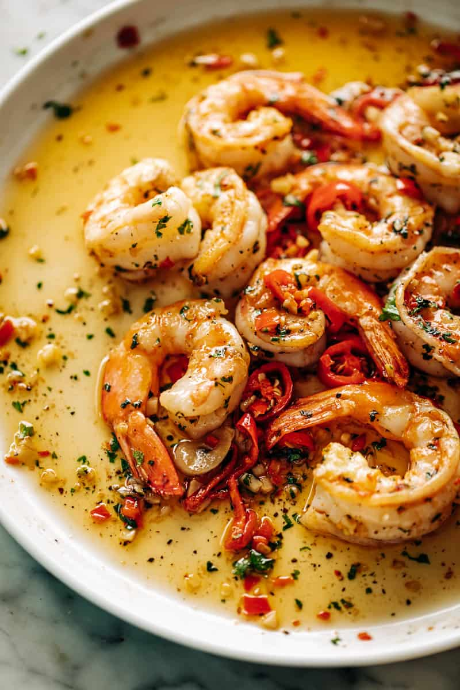

Chili Butter Shrimp

Description
Chili Garlic Butter Shrimp is the easiest low carb weeknight or weekend
meal! A garlic buttery sauce with a smack of chili will be on your mind
for days after. Ready in less than 10 minutes, what could be better than
this? Not much else!
Ingredients
- 2 tablespoons olive oil
-
1 1/4 pounds (600 grams) large shrimp (prawns), shelled and deveined,
tails on or off
- Pinch of coarse salt and fresh ground black pepper, to taste
- 4 tablespoons butter
- 4-5 cloves garlic, minced (or 1 1/2 tablespoons minced garlic)
- splash of dry white wine or broth (about 2 tablespoons)
- 1-2 whole red cayenne chili peppers
- 1/4 cup chopped parsley
Steps
-
Heat olive oil in a large pan or skillet over medium heat. Add the shrimp, season with salt and pepper to taste and sear for 1-2 minutes on each side (until just beginning to turn pink).
-
Quickly deglaze the pan with a splash of wine or broth (if using), scraping up any browned bits from the bottom of the pan. Add the butter, garlic, red chilis and parsley. Toss shrimp through the butter sauce and cook for a further 30 seconds - 1 minute until the shrimp is cooked through (being careful not to overcook your shrimp).
-
Immediately take off heat and serve.